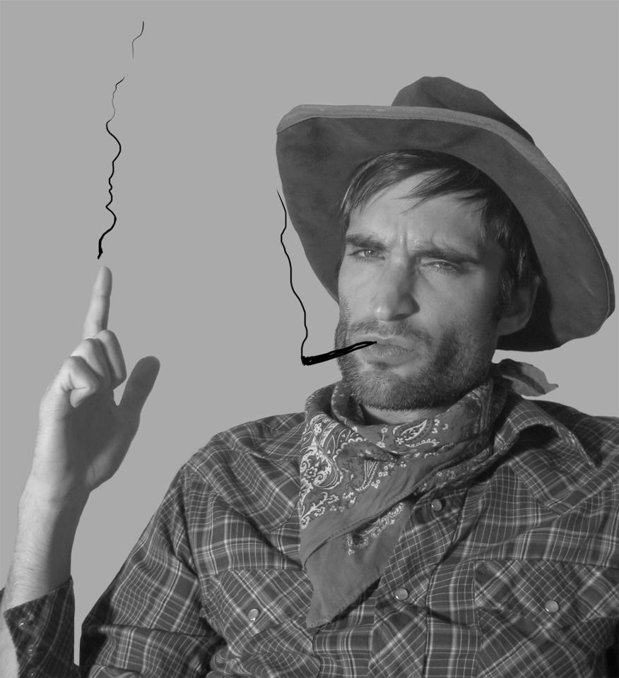

Long Story Short Bryce Dishongh (pronounced dish-on), born 1982, writes technical manuals by day, but draws by night. He likes bicycles and cats and lives in Austin, Texas. Short Story Long Bryce Dishongh hates writing in the third person, so I’ll stop and proceed with my brief history. I was raised in some suburbs outside of Houston, Texas, where I enjoyed long walks through littered woods between neighborhoods. As early as elementary school I was fascinated and inspired by illustration, and by high school, I had developed a specific style using pen-and-ink and cross-hatching to create odd-looking people and creatures that I used in portraits of teachers and classmates, school projects, and comics. I admired Ralph Steadman’s weird darkness. The weirdness to which I was so attracted and that recurred in my drawings was largely a reflection of the anxiety and confusion I felt as an adolescent. But there was a warm and placid layer as well that probably came from growing up comfortably in the suburbs. I didn’t just want to draw dark or disturbing subject matter—that’s the stuff of death-metal album covers—I wanted to mix the anxious, scary world I had entered with the stoic powerlessness and formality I felt living in the suburbs. Despite somewhat angsty drawings, I became the artist for the high school newspaper, but until 2007, that was the extent of my professional drawing career. I went off to college to study English and Philosophy, ultimately earning a Master’s degree in Technical Writing. But I drew all through undergrad. Probably some of my best work, mainly because I wasn’t trying to turn it into anything. It was just a mode of expression. In some ways, college was more alienating than high school, and my drawings were again a reflection of what it’s like in that world. During graduate school, all personal work stopped because I was busy studying and working, but also because I started doing freelance illustration for a silkscreen shop, which forced me to get more professional about drawing. I actually had to use decent paper, create and express concepts rather than reflections of my own feelings, draw realistically, and learn how to use Illustrator and Photoshop to help edit final drawings. All of this was pivotal in my development as an illustrator. I also came across the work of the Golden Age Illustrators and was inspired to create the same level of epic nostalgia in my own work, only I wanted to push it further, juxtaposing that innocent, idealized, and vintage style with more mysterious, disconcerting, and what might be called contemporary subject matter. But alas, my professional life overtook me. After I graduated I started working as a technical writer in Austin, Texas. Between work, marathon training, and an addiction to cycling, I stopped drawing altogether. I did however explore graphic design thoroughly, creating posters, flyers, web graphics, and other marketing materials for the company I was working for. I’d say that design plays an important role in some of the images I make nowadays, since it’s not uncommon for me to illustrate and design gig posters, flyers, tee shirts, or album covers. After a few years working as a technical writer I had essentially become a graphic designer. I started taking on freelance jobs doing design, illustration, and writing on the side. But, I was still not completely clear on exactly what I wanted to do, so I quit my job, took a year off, and explored my main interests. I did a lot of freelance editing, graphic design, and illustration, but I ultimately decided I really really really wanted to do the sort of work I did on notebook paper in the back of the classroom. Personal artwork. Stuff I created just because it was in me, not because someone wanted me to make it or I thought people would like it. This is not a financially lucrative approach, especially when you’re just starting out, so I decided to go back to technical writing. This ensured financial stability while I explored the sort of work I wanted to make. That pretty much brings us to the present. I wake up early and run or ride my beloved bicycle to work in downtown Austin and revel for eight hours in the immense tedium of technical writing. I draw when I can: before work, on my lunch break, and certainly in the evenings and on weekends. Sometimes I show work in galleries around town. Because I work during the day my progress on projects and drawings is a bit slower than other artists, but I’m ok with that. It’s something that should take time and thought.
|
|